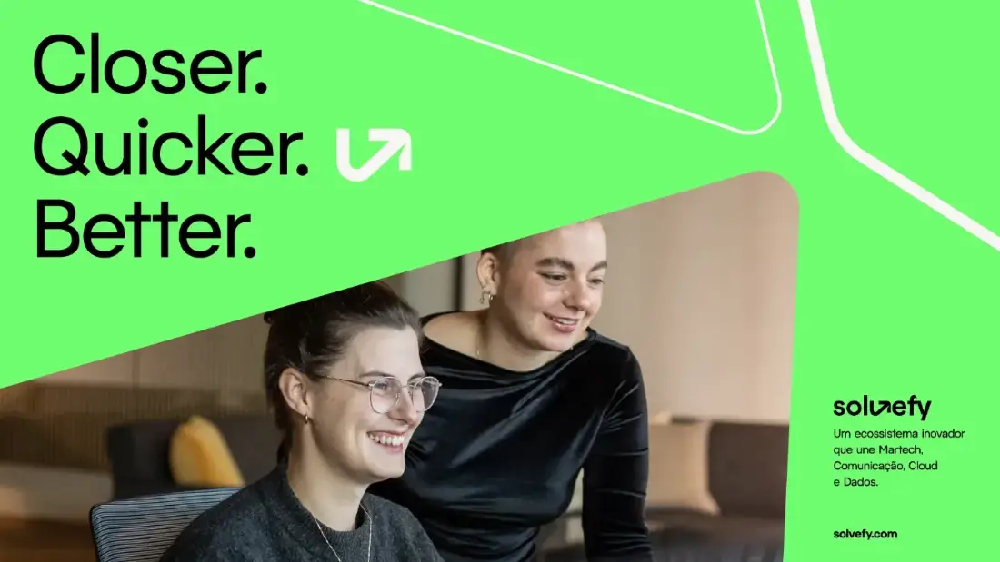
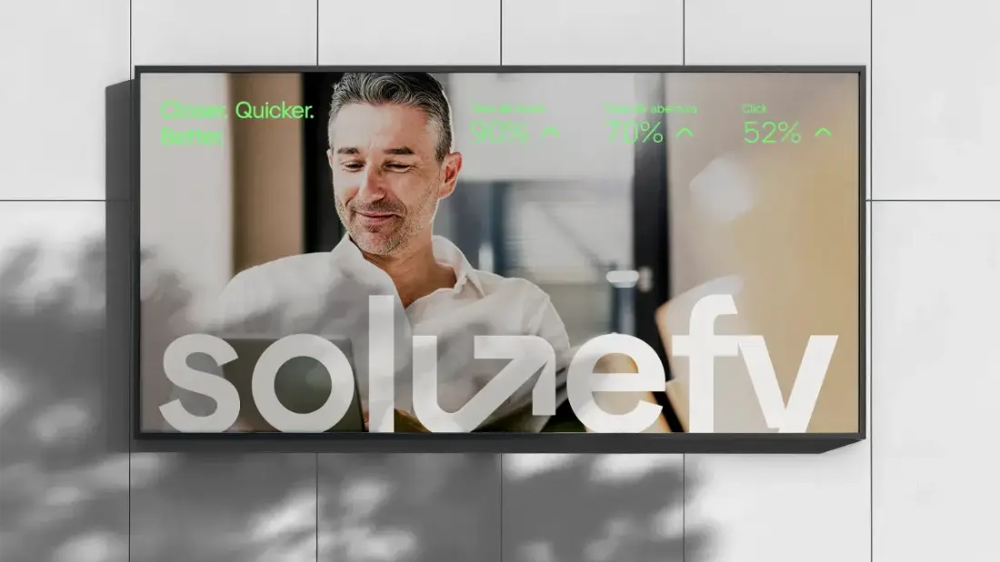
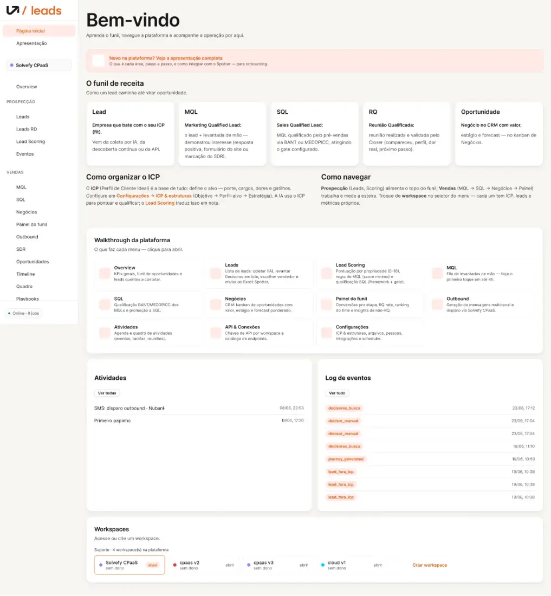
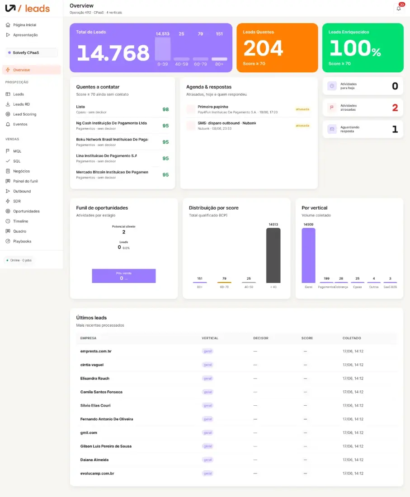
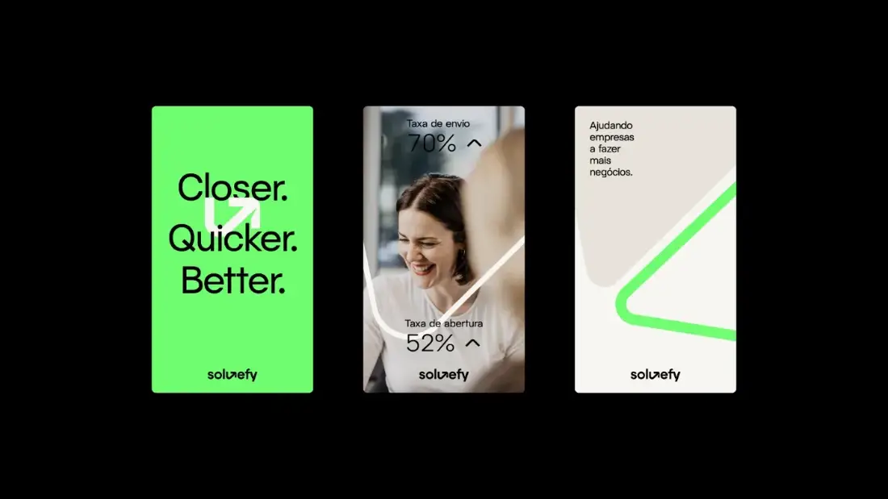
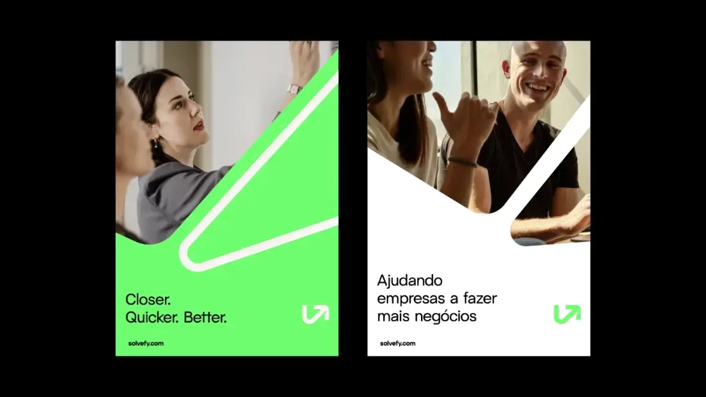

Solvefy
Featured · Staff Product Designer / PD Lead · 2024–2026A communications company two decades in the making, reborn as a technology ecosystem serving 20k+ companies. I owned design and growth through the change.

The rebrand
Research first: 5 disconnected brands with inconsistent messaging turned into one integrated business ecosystem — brand, communication tracks and two live events.

The product
Four products — Disparo Pro, Brasilfone, EasyCDP, Solvefy Cloud — reorganized under one portfolio and one design system. Navigation and campaign dispatch got noticeably smoother.

The AI
AI driven design workflows shipped while the company launched Agents, its AI orchestration product. Design that ships with AI, not around it.

The leads engine
A clear OKR: find and qualify leads fast. I designed and built the platform end to end — workspaces per ICP, in the sales team's hands.

The research
Research brought into how we designed and shipped: decisions grounded in real pain and churn data, not opinion. Three large clients came back.

The team
A team of 7 — design and growth pulling toward the same business outcomes, on a Winning by Design operating culture.